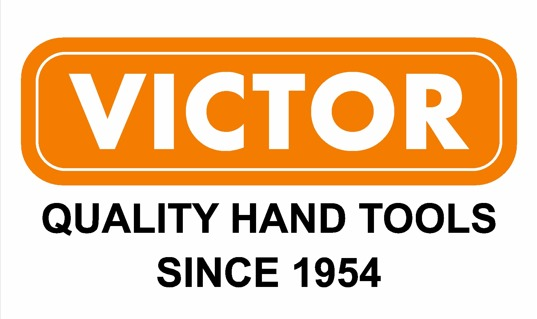

MITEX 2026 · Индия · Стенд 7C301
Victor tools
Карточка проверена 10 ноября 2026, 09:28 · Источник ↗ · Снимок оригинальной карточки ↗
О компании
Компания Victor Forgings, основанная в 1954 году, — семейное предприятие и один из ведущих производителей и экспортёров профессионального ручного инструмента в Индии. Приверженность компании высоким стандартам качества и инновациям отражается в наличии современных собственных производственных мощностей. Victor Forgings производит гаечные ключи в соответствии со стандартами DIN.
Контакты
Все контактные сведения из карточки
Контакты A4, FOCAL POINT, G.T. ROAD, BYE PASS, JALANDHAR Телефон: +91 9814167800 E-mail: info@victortools.com Адрес: Индия, PUNJAB, JALANDHAR E-mail: info@victortools.com Телефон: +91 9814167800
Все рубрики участника
Mitex - Рубрикатор
- 5. Слесарный, монтажный, столярный, ручной инструмент
- 8. Инструмент и оборудование для автосервиса
Зал
- Зал № 7
Участник выставки
- MITEX
Видео, каталоги и документы
В доступной карточке нет видео или документов. Смотрите сайт участника.